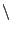
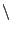
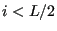
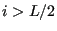
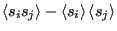

- Modify the code so that when samples are
taken in accumulating statistics for
 and
and
 , the current sample values are output to the
terminal. You'll want to find the right place to add the following
line: fprintf(stdout,"%i %.5lf %.5lf
n",c,s,e);
, the current sample values are output to the
terminal. You'll want to find the right place to add the following
line: fprintf(stdout,"%i %.5lf %.5lf
n",c,s,e);
- The current version of the code initializes the Ising lattice with
random spins. What temperature does this correspond to? Modify the
code so that the initial lattice has two well-defined domains, all
spin-up for  and all spin-down for . Re-run at
the various temperatures. Do you see any differences?
- (Advanced) Modify the code ising.c to compute the quantity
 as a function
of various distances between spins
 and
and  .
.
cfa22@drexel.edu